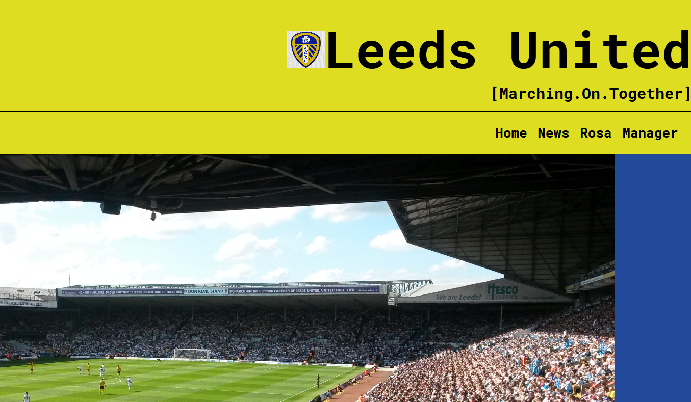

Matteo Gregoricchio
Curriculum Vitae (press your preferred flag!)


-

Julio Castellanos e i Contemporáneos
Tesi Triennale, relatore: dr. Mario Sartor
-

Il conceptualismo ideológico nell’Argentina degli anni ‘70: analisi dell’operato del Grupo CAYC
Tesi Magistrale, relatore: dr. José Luis De la Nuez Santana
-

Modello 1: Sito Squadra di Calcio

About
Benvenuto nel mio sito personale! Sono Matteo e, se sei arrivato su questa pagina, starai cercando qualche informazione su di me.
Sono un (recente!) laureato magistrale in Storia dell'Arte, con un grande interesse per l'informatica. Per questo sto studiando da autodidatta per iniziare il mio percorso come Full-Stack Developer. Per darti un'idea dei miei progressi, mi trovo al quarto corso [Form e tabelle con HTML] della carriera da Full-Stack Developer su Lacerba.io (clicca qui se sei interessato!); per ora mi destreggio con HTML e CSS. Negli ultimi anni di studio ho anche lavorato come traduttore freelance - se sei curioso, sopra trovi il mio CV.
Per darti qualche info meno asettica ti dico che: fin da piccolo sono un avido lettore, sia di libri che di fumetti; sono un videogiocatore incallito since psX, passando poi per ps2/3/4 e Nintendo Ds (e discendenti); mi intendo di calcio, senza più seguirlo (troppo) come un tempo. La cosa che meglio incarna la mia anima è l'atmosfera che si respira in Ico - 'nuff said.
Se mi trovi in giro fammi un saluto :)!
Per conoscermi meglio
- Punti di Forza: Ordine - Chiarezza - Sintesi & Efficacia - Resistenza
- Conoscenze Informatiche: HTML - CSS3 - PacchettoOffice - [...]
- Lingue conosciute: Italiano - Inglese - Spagnolo
- Libri Fondamentali: La Caduta, A. Camus - La Nausea, P. Sartre - Teatro, T. Beckett - Tempo di Uccidere, E. Flaiano - I Demoni, F. Dostoevskij
- Fumetti Fondamentali: PKNA - Corto Maltese, H. Pratt - Blame!, T. Nihei - F.M.A, H. Arakawa - Akira, K. Otomo
- Videogiochi Fondamentali: Ico - The Last Guardian - The Witness - Metal Gear Solid -
- Altro: ♥ caffè, stirare, ordinare geometricamente gli oggetti
Contacts
ps: click them ;)